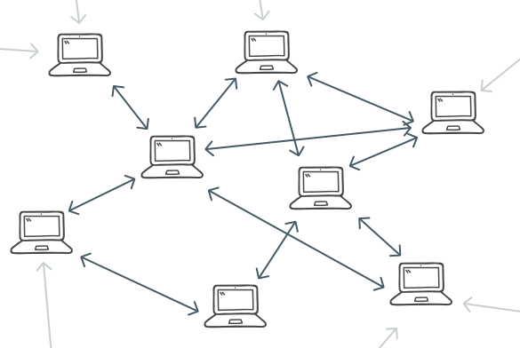
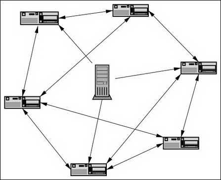

注：本篇文章内容借鉴自：浅入浅出BitTorrent协议，其中加入了博主的部分原创，感谢，侵删~
对等网络的概念
以下定义主要摘抄自维基百科与中科院计算技术研究所：
对等式网络（peer-to-peer，简称P2P），又称点对点技术，是无中心服务器、依靠用户群（peers）交换信息的互联网体系。它的作用在于，网络的参与者共享他们所拥有的一部分硬件资源（处理能力、存储能力、网络连接能力、打印机等），这些共享资源通过网络提供服务和内容，能被其它对等节点(Peer)直接访问而无需经过中间实体，减低以往网路传输中的节点，以降低资料遗失的风险。与有中心服务器的中央网络系统不同，对等网络中的每个用户端既是资源（服务和内容）提供者（Server），又是资源获取者（Client），任何一个节点无法直接找到其他节点，必须依靠其用户群进行信息交流。
对等网络的模型
P2P网络的简易模型图如下：

如图，我们可以总结出P2P网络的一些特征：
- 非中心化：P2P是全分布式系统，网络中的资源和服务分散在所有的节点上，信息的传输和服务的实现都直接在节点之间进行，可以无需中间环节和服务器介入。
- 可扩展性：用户可以随时加入该网络，系统的资源和服务能力随之同步扩充。理论上其可扩展性几乎可以认为是无限的。
- 健壮性：因为服务是分散在各个节点之间的，部分节点或网络遭到破坏对其他部分的影响很小，故P2P具有耐攻击、高容错的特点。P2P网络一般在部分结点失效时能够自动调整整体拓扑，保持其它结点的连通性。P2P网络通常都是以自组织的方式建立起来的，并允许结点自由地加入和离开。
- 高性价比：P2P架构可以有效地利用互联网中散布的大量普通结点，将计算任务或存储资料分布到所有结点上。利用其中闲置的计算能力或存储空间，达到高性能计算和海量存储的目的。
- 隐私保护：在P2P网络中，由于信息的传输分散在各节点之间进行而无需经过某个集中环节，用户的隐私信息被窃听和泄漏的可能性大大缩小。
- 负载均衡：由于每个节点既是服务器又是客户端，减少了传统C/S模型中对服务器计算能力、存储的要求，同时因为资源分布在多个节点，更好的实现了整个网络的负载均衡。
BitTorrent协议
BitTorrent协议，简称BT协议，是一种互联网上新兴的P2P传输协议（即BT是一种特殊的P2P）。
出现的历史原因
随着全球接入互联网人数的增长，对互联网应用的服务端要求越来越高，吞吐量和并发量逐步加大。像国外的Google、Amazon，国内的阿里、百度等大型互联网企业十分关注如何使用集群、负载均衡等技术来提高网站的并发和吞吐量。但对于保存大文件给用户下载的中小型网站，在互联网爆发式增长下，用户数量越来越多，传输的文件越来越大，使用一台或几台服务器和传统的FTP、HTTP协议难以满足用户对下载速度的需求（受限于庞大的用户请求量、硬盘读取速度、带宽等）。BitTorrent协议解决了这些问题。
BT下载流程
无论是BT还是PT，还是FTP，都是一种下载方式，或者学术点的讲法，叫文件传输。
BT下载通过一个P2P下载软件（点对点下载软件）来实现，克服了传统下载方式的局限性，具有下载的人越多，文件下载速度就越快的特点。其好处是不需要资源发布者拥有高性能服务器就能迅速有效地把发布的资源传向其他的BT客户软件使用者，而且大多数的BT软件都是免费的。
BT下载架构模型图：

现在，我们已经清楚了BT下载的架构模型，对于BT下载流程的讨论，我们跟随BT协议所引出的三个问题来进行：
- 一个对等用户如何找到具有自己想下载内容的其他对等用户？
- 对等用户们如何复制内容以便为大家提供高速下载？
- 对等用户们如何相互鼓励上传内容给他人同时为自己下载内容？
B encode
在解决这三个问题之前，先简单介绍下B encode，因为在BitTorrent协议中的数据几乎都是用B encode进行编码的。它是一种作用类似于XML和JSON的数据组织格式，可以表达字符串、整数两种基本类型，列表、字典两种数据结构，它的语法规则十分简单。
- 字节串按如下方式编码：
<以十进制ASCII编码的串长度>:<串数据>
例：“4:spam”表示字节串“spam”
- 整数按如下方式编码：
i<以十进制ASCII编码的整数>e
例：“i3e”表示整数“3”
- 列表按如下方式编码：
l<内容>e
开始的“l”与结尾的“e”分别是开始和结束分隔符。lists可以包含任何B编码的类型，包括整数、串、dictionaries和其他的lists。
例：l4:spam4:eggse 表示含有两个串的lists:[“spam”、“eggs”]
- 字典按如下方式编码：
d<内容>e
开始的“d”与结尾的“e”分别是开始和结束分隔符。注意键（key）必须被B编码为串。值可以是任何B编码的类型，包括整数、串、lists和其他的dictionaries。键（key）必须是串，并且以排序的顺序出现（以原始串排列，而不是以字母数字顺序）。
例：d3:cow3:moo4:spam4:eggse表示dictionary { “cow” => “moo”, “spam” => “eggs” }
torrent文件与tracker服务器
现在，我们考虑上述中的第一个问题：一个对等用户如何找到具有自己想下载内容的其他对等用户？
在P2P网络系统的最初阶段，并不是所有的用户都拥有所有的内容，首先需要一个内容的发布者。作为内容的发布者，BitTorrent可以为每个发布者（内容提供商）创建一个内容描述文件，即.torrent文件，也就是我们平常所说的种子文件。
种子文件是一种指定格式的文件，包含了两类关键信息，一类信息是tracker服务器的URL，一类信息是一个大小相等的块的清单。tracker服务器可以将用户引导至种子文件的内容，也就是将用户引导至拥有当前用户所需下载内容的其他对等节点处，块清单则组成了内容。
关于种子文件具体的组成结构，它使用B encode表示，整个是一个字典数据结构，它有多个key值，包括一些是可选的，这里介绍最关键的上述两类信息的键值对：
- info：存储资源文件的元信息
- piece length
- pieces
- name/path
- announce：描述tracker服务器的URL
info：info键对应的值又是一个字典结构，BT协议将一个文件分成若干块，便于客户端从各个主机下载各个块。其中的piece length键值对表示一个块的长度，通畅情况下是2的n次方，根据文件大小有所权衡，通长越大的文件piece length越大以减少piece的数量，降低piece数量一方面降低了种子文件保存块信息数目的大小，一方面也减少了下载时需要对块做的确认操作，加快下载速度。目前块的大小通常是256KB，512KB或者1MB。
pieces：表示每个块的正确性验证信息，每一块均对应一个唯一的SHA1散列值。该键对应的值是所有块的SHA1散列值（每个块所对应的散列值大小为20字节）连接而成的字符串。
name/path：表示具体文件的信息。因为BitTorrent协议允许将数个文件和文件夹作为一个BT下载进行发布，因此下载方可以根据需要勾选某一些下载文件。注意，这里将数个文件也砍成一个数据流，因此一个piece如果在文件边界上，可能包含不同文件的信息。
announce：保存的是tracker服务器的URL，在一些扩展协议中，announce可以保存多个tracker服务器作为备选。
生成好种子文件之后，为了下载由种子文件所描述的内容，一个对等用户首先需要和此种子文件取得联系。这个种子文件通常被放在服务器上，可以通过HTTP或者FTP协议供用户下载这个种子文件。相比于直接将整个资源文件提供给用户下载，只传输一个种子文件大大降低了服务器的负荷。
在取得种子文件后，我们可以通过BitTorrent协议提供的一些工具（BitTorrent软件客户端）来打开这个种子文件，客户端会根据种子文件的name/path元信息告诉我们这个种子文件可以下载到（假设）一个.mkv文件，一个字幕文件，在这个阶段我可以进行一些勾选，选择下载某些而不是全部的资源。
资源选择确定后，客户端就开始了下载。客户端的第一步任务根据种子文件上的tracker服务器的URL使用HTTP进行GET请求——tracker服务器维护着一个正在主动上传和下载该内容的所有其他对等用户列表，我们将这一组对等用户称为用户群，对等用户可以随时离开群（以及返回），只要他们及时向tracker服务器进行报告即可——这个请求包含了很多参数，这里只介绍从客户端发送到tracker的请求中最关键的几个参数。
- info_hash
- peer_id
- ip
- port
info_hash：种子文件中info键所对应的值的SHA1散列，可以被tracker服务器用来索引唯一的对应资源。
peer_id：20Byte的串，没有任何要求，被tracker服务器用于记录客户端的名字。
ip：可以从HTTP GET请求中直接获取，放在参数中可以解决使用代理进行HTTP GET的情况，tracker服务器可以记录客户端的IP地址。
port：客户端监听的端口号，用于接收Response。一般情况下为BitTorrent协议保留的端口号：6881-6889，tracker服务器会记录下端口号用于通知其他客户端。
在tracker服务器收到客户端的HTTP GET请求后，会返回B encode形式的text/plain文本，同样是一个字典数据结构，其中最关键的一个键值对是peers，它的值是个字典列表结构，列表中的每一项都是如下的字典结构：
- peers
- peer_id
- ip
- port
这些信息在每个客户端连接tracker服务器的时候都发送过，并且被Tracker服务器保存了下来。新来的客户端自然要获取到这些下载中或者已下载完的客户端的ip，port等信息，有了这些信息，客户端就不需要像FTP或者HTTP协议一样持续找服务器获取资源，可以从这些其他客户端上请求获取资源。
peer to peer
如上所述，如果对第一个问题进行简单的总结，那么自己想要下载的内容就交由种子文件进行确定，而如何寻找拥有这些资源的其他对等用户，则需要tracker服务器的帮助。
那么，我们现在思考第二个问题：对等用户们如何复制内容以便为大家提供高速下载？
客户端从tracker服务器获取到若干其他下载者(peer)的ip和port信息，会进行请求并维持跟每一个peer的连接状态。一个客户端和每一个peer的状态主要有下列状态信息：
- choke：远程客户端拒绝响应本客户端的任何请求。
- interested：远程客户端对本客户端的数据感兴趣，当本客户端unchoked远程客户端后，远程客户端会请求数据。
所以应该有4个参数，分别表示本客户端对远程客户端是否choke，是否interested，远程客户端对本客户端是否choke，是否interested。当一个客户端对一个远程peer感兴趣并且那个远程peer没有choke这个客户端，那么这个客户端就可以从远程peer下载块(block)。当一个客户端没有choke一个peer，并且那个peer对这个客户端感兴趣时，这个客户端就会上传块(block)。
补充一点：由于内容发布者本来就拥有所有的块，因此在生成种子文件的时候，内容发布者首先会根据种子文件将内容重新下载一遍，在这个过程中就会联系tracker服务器，然后将自己的信息记录在其所维护的用户列表上。
其实上述所讲的概念已经解答了第二个问题，每一个对等节点在参与一个用户群期间，都可同时从其他对等节点处下载缺少的块，并给其他对等节点上传本身拥有并且他们所需要的块。如果每个对等节点都这样做，那么经过短暂的一段时间后，所有的块都将成为广泛可用——加入用户群的用户越多，块被交易的越频繁，下载速度越快。
对第二个问题的答案进行一个简单的总结：对等用户们通过在下载块的同时也会上传块，从而为大家提供高速下载。
我们再进行一些补充，上面也提到了，在交易块的过程中，端与端之间会进行通信：
首先会发送握手报文，告诉远程客户端本客户端的一些信息，包括info_hash和peer_id。
接下来的所有报文有如下几种类型：
- keep-alive：告诉远程客户端这个通信还在维持，否则超过2分钟没有任何报文远程客户端会将通信关闭
- choke
- unchoke
- interested
- not interested
- bitfield：告诉对方我已经有的piece
- have：告诉对方某个piece已经成功下载并且通过hash校验
- request：请求某个块(block)
- index: 整数，指定从零开始的piece索引
- begin: 整数，指定piece中从零开始的字节偏移
- length: 整数，指定请求的长度
- piece：返回请求的块(block)的数据，是真正的资源信息
- index: 整数，指定从零开始的piece索引
- begin: 整数，指定piece中从零开始的字节偏移
- block: 数据块
经过这些报文在本地客户端和若干个远程客户端之间的来回传递，就能够获取到资源文件。
PT下载
在解决了前两个问题之后，我们来考虑第三个问题：对等用户们如何相互鼓励上传内容给他人同时为自己下载内容？
我们也可以看到，在P2P网络中，起初必须有一个内容的提供者，并且在健康的P2P网络中，每个peer都应当同时扮演客户端与服务器两个角色，那些只想从系统中获取资源而没有实物贡献的节点我们称之为“搭便车”或“吸血鬼”，如果这样的用户太多，那系统将无法正常工作。
PT全称Private Tracker，与BT最大的不同点分别为可进行私密范围下载，及可统计每个用户的上传及下载量。从技术上可以简单的看作有一个tracker服务器会对用户的下载上传进行统计，分享率不够就禁止用户下载，在一定程度上可以防止只下载而不上传的用户存在。关于PT下载更详细的内容，博主不在这里进行讨论，有兴趣的同学可以自行查阅相关资料。
一个有趣的小问题
迅雷作为国内首屈一指的BT下载工具，为什么有时在下载接近完成的最后，一些数据总是传输的非常慢呢？
基于现实情况分析，有些人下载完成后关掉下载任务，提供较少量数据给其他用户，为尽量避免这种行为，在非官方BitTorrent协议中存在超级种子的算法。这种算法允许文件发布者分几步发布文件，发布者不需要一次提供文件所有内容，而是慢慢开放下载内容的比例，延长下载时间。此时，速度快的人由于未下载完必须提供给他人数据，速度慢的人有更多机会得到数据。由此往往造成用户卡在任务的99%，下载1G的任务要上传3G之多的数据。
总结
- 熟悉P2P网络的特点及优势；
- 熟悉BitTorrent协议的基本内容；
- 熟悉BT下载的过程（种子文件以及tracker服务器）；
- 掌握诸如用户群、吸血鬼等名词含义；
- 了解种子文件的组成格式——B编码；
- 了解peer与peer之间的通信报文格式；
- 能独立回答出关于BitTorrent协议的三个问题。
参考阅读
计算机网络（第五版） — Andrew S. TanenBaum/David J. Wetherall